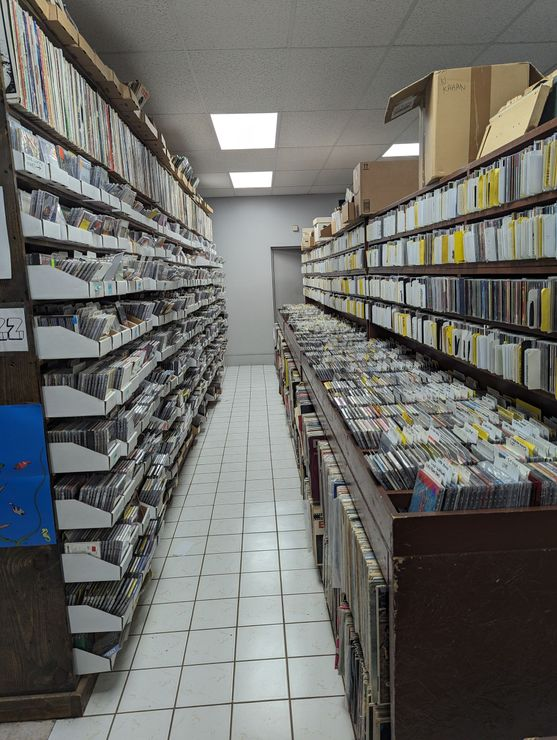

Show the shop
Lead with real photos of the aisles and the story, so a first-time digger knows exactly what they are walking into.
The store is a Pittsburgh institution. The current site is a dated builder template with no real way to browse what is in the bins or plan a visit.
What I would change
Lead with real photos of the aisles and the story, so a first-time digger knows exactly what they are walking into.
Featured finds, new arrivals, hours, and events up front, so collectors have a reason to check the site and then drive over.
A clean, fast page that actually shows up when someone searches for a record store in Pittsburgh, on any device.
This preview starts from your real photos, your menu, and the exact thing I noticed when I landed on the current site.
The full version turns this direction into a fast, mobile-first site on the domain you already own. $1,500 flat, about two weeks.